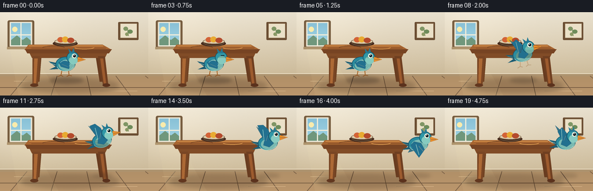
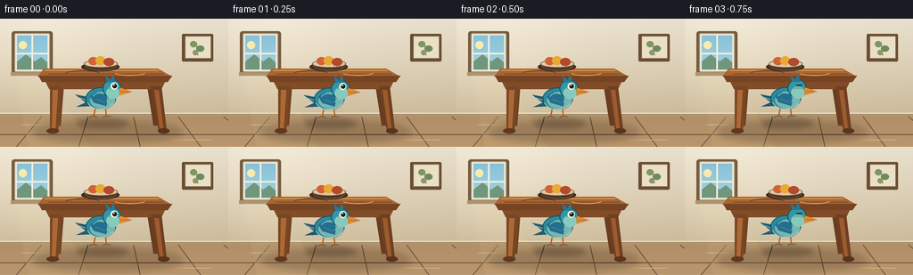
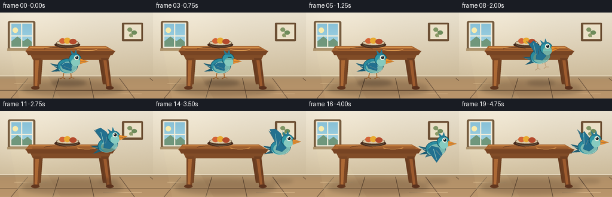

CODING AGENTS AS PIXEL WORLD MODELS
traex/GPT-5.6-Sol · dynamic_spatial_relationship_0042
点击播放 · 原生 RGB 像素
逐轮保存的候选
回放视频、检查图与代码变化。
每份候选均可单独播放。实际图片检查记录在下方工具轨迹中。
候选 01播放与检查图
点击播放 · 原生 RGB 像素


展开代码变化
--- 上一保存版本
+++ 本次保存版本
@@ -0,0 +1,291 @@
+from pathlib import Path
+import math
+import numpy as np
+from PIL import Image, ImageDraw, ImageFilter
+import artifact_io
+
+# PixelWorld case: "A bird is in front of a table, then the bird flies to the right of the table."
+# The artwork is drawn at 4x resolution and downsampled for clean antialiasing.
+W, H, N = 256, 144, 20
+SS = 4
+CASE_DIR = Path(__file__).resolve().parent
+rng = np.random.default_rng(42)
+
+
+def sc(v):
+ return int(round(v * SS))
+
+
+def box(b):
+ return tuple(sc(v) for v in b)
+
+
+def pts(p):
+ return [(sc(x), sc(y)) for x, y in p]
+
+
+def smoothstep(t):
+ t = max(0.0, min(1.0, t))
+ return t * t * (3.0 - 2.0 * t)
+
+
+def make_background():
+ """Painterly, static room background with subtle deterministic texture."""
+ hh, ww = H * SS, W * SS
+ yy = np.linspace(0, 1, hh, dtype=np.float32)[:, None]
+ xx = np.linspace(0, 1, ww, dtype=np.float32)[None, :]
+ top = np.array([236, 228, 210], dtype=np.float32)
+ bottom = np.array([202, 183, 148], dtype=np.float32)
+ mix = np.minimum(yy / 0.88, 1.0)[..., None]
+ arr = top[None, None, :] * (1 - mix) + bottom[None, None, :] * mix
+ arr = np.broadcast_to(arr, (hh, ww, 3)).copy()
+ # Window-side illumination and gentle vignette.
+ glow = 10.0 * np.exp(-((xx - 0.17) / 0.32) ** 2 - ((yy - 0.23) / 0.50) ** 2)
+ vignette = 9.0 * ((xx - 0.48) ** 2 + (yy - 0.45) ** 2)
+ arr += glow[..., None] - vignette[..., None]
+ noise = rng.normal(0, 0.65, (hh, ww, 1)).astype(np.float32)
+ arr = np.clip(arr + noise, 0, 255).astype(np.uint8)
+ im = Image.fromarray(arr, "RGB").convert("RGBA")
+ d = ImageDraw.Draw(im, "RGBA")
+
+ # Window alcove and distant blue sky, left side.
+ d.rounded_rectangle(box((13, 14, 59, 63)), radius=sc(3), fill=(117, 91, 62, 70))
+ d.rounded_rectangle(box((16, 16, 56, 60)), radius=sc(2), fill=(238, 234, 218, 255), outline=(163, 143, 112, 210), width=sc(1))
+ # sky gradient in panes
+ for y in range(19, 57):
+ q = (y - 19) / 38
+ col = (137 + int(25*q), 193 + int(20*q), 215 + int(14*q), 255)
+ d.line(pts([(19, y), (53, y)]), fill=col, width=sc(1))
+ # soft landscape visible outside
+ d.polygon(pts([(19, 48), (29, 40), (39, 48), (46, 43), (53, 49), (53, 57), (19, 57)]), fill=(112, 151, 124, 210))
+ d.ellipse(box((21, 25, 30, 34)), fill=(249, 235, 172, 220))
+ d.line(pts([(36, 18), (36, 59)]), fill=(241, 237, 218, 255), width=sc(2))
+ d.line(pts([(18, 39), (54, 39)]), fill=(241, 237, 218, 255), width=sc(2))
+ d.rectangle(box((12, 60, 60, 64)), fill=(173, 147, 108, 160))
+
+ # Small framed botanical print high on right; intentionally subdued.
+ d.rounded_rectangle(box((204, 17, 239, 48)), radius=sc(1.5), fill=(105, 76, 49, 90))
+ d.rectangle(box((207, 19, 237, 45)), fill=(234, 224, 199, 255), outline=(128, 99, 68, 230), width=sc(1))
+ d.line(pts([(222, 41), (220, 27)]), fill=(103, 126, 83, 190), width=sc(1))
+ d.ellipse(box((213, 25, 221, 32)), fill=(128, 150, 101, 170))
+ d.ellipse(box((220, 30, 229, 37)), fill=(110, 140, 91, 170))
+ d.ellipse(box((216, 35, 222, 41)), fill=(139, 153, 102, 160))
+
+ # Baseboard and floor.
+ d.rectangle(box((0, 106, 256, 111)), fill=(173, 147, 111, 255))
+ d.line(pts([(0, 106), (256, 106)]), fill=(245, 234, 211, 220), width=sc(1))
+ for y in range(111, 144):
+ q = (y - 111) / 33
+ c = (177 + int(10*q), 144 + int(6*q), 104 + int(4*q), 255)
+ d.line(pts([(0, y), (256, y)]), fill=c, width=sc(1))
+ # Floor boards and perspective seams.
+ for x0 in (-55, 18, 88, 157, 225, 294):
+ x1 = 128 + (x0 - 128) * 0.74
+ d.line(pts([(x1, 110), (x0, 144)]), fill=(116, 91, 67, 62), width=sc(1))
+ d.line(pts([(0, 130), (256, 130)]), fill=(106, 81, 58, 40), width=sc(1))
+ # Fine floor highlights.
+ d.line(pts([(24, 119), (79, 119)]), fill=(230, 198, 153, 60), width=sc(.5))
+ d.line(pts([(172, 136), (237, 136)]), fill=(230, 198, 153, 45), width=sc(.5))
+ return im
+
+
+def draw_table(scene):
+ """Draw table and decor. The bird is composited later, establishing 'in front'."""
+ # broad floor shadow
+ sh = Image.new("RGBA", scene.size, (0, 0, 0, 0))
+ sd = ImageDraw.Draw(sh, "RGBA")
+ sd.ellipse(box((36, 115, 205, 139)), fill=(70, 48, 30, 65))
+ sh = sh.filter(ImageFilter.GaussianBlur(sc(4)))
+ scene.alpha_composite(sh)
+ d = ImageDraw.Draw(scene, "RGBA")
+
+ # Back legs first, trapezoids emphasize depth.
+ d.polygon(pts([(61, 69), (72, 69), (68, 120), (61, 121)]), fill=(113, 67, 35, 255))
+ d.polygon(pts([(164, 69), (174, 69), (179, 120), (172, 120)]), fill=(104, 60, 32, 255))
+ d.line(pts([(64, 72), (63, 117)]), fill=(176, 113, 59, 120), width=sc(1))
+
+ # Front apron and legs.
+ d.polygon(pts([(48, 65), (188, 65), (181, 79), (55, 79)]), fill=(129, 76, 39, 255))
+ d.polygon(pts([(56, 76), (69, 76), (65, 127), (56, 127)]), fill=(121, 70, 36, 255))
+ d.polygon(pts([(169, 76), (181, 76), (187, 127), (178, 127)]), fill=(111, 63, 33, 255))
+ d.polygon(pts([(59, 80), (65, 80), (62, 124), (58, 124)]), fill=(172, 105, 53, 120))
+ d.polygon(pts([(173, 80), (178, 80), (183, 123), (179, 123)]), fill=(157, 91, 46, 95))
+ # feet
+ d.ellipse(box((52, 123, 66, 129)), fill=(98, 55, 31, 210))
+ d.ellipse(box((177, 123, 190, 129)), fill=(91, 50, 29, 210))
+
+ # Thick tabletop: perspective top plane plus rounded front rim.
+ d.polygon(pts([(49, 56), (177, 56), (193, 65), (42, 65)]), fill=(167, 101, 49, 255))
+ d.polygon(pts([(43, 64), (193, 64), (188, 71), (47, 71)]), fill=(119, 68, 35, 255))
+ d.line(pts([(50, 58), (178, 58)]), fill=(226, 159, 83, 165), width=sc(1))
+ d.line(pts([(54, 62), (183, 62)]), fill=(120, 67, 34, 90), width=sc(.7))
+ # restrained wood grain
+ d.arc(box((73, 58, 112, 65)), 190, 348, fill=(105, 60, 33, 85), width=sc(1))
+ d.arc(box((128, 57, 163, 64)), 8, 160, fill=(231, 164, 85, 70), width=sc(1))
+
+ # ceramic fruit bowl makes the object instantly table-like.
+ d.ellipse(box((91, 49, 134, 59)), fill=(71, 44, 30, 65))
+ d.ellipse(box((94, 46, 132, 55)), fill=(221, 203, 170, 255), outline=(125, 103, 75, 180), width=sc(1))
+ d.ellipse(box((99, 43, 110, 52)), fill=(211, 99, 55, 255))
+ d.ellipse(box((107, 42, 118, 52)), fill=(232, 170, 49, 255))
+ d.ellipse(box((116, 44, 128, 53)), fill=(180, 74, 44, 255))
+ d.arc(box((95, 47, 131, 58)), 4, 176, fill=(111, 94, 71, 160), width=sc(1))
+
+
+def bird_sprite(wing, flight, blink=False):
+ """A detailed turquoise bird, facing right. `wing` in [-1,1], positive = upstroke."""
+ cw, ch = 78, 72
+ im = Image.new("RGBA", (cw * SS, ch * SS), (0, 0, 0, 0))
+ d = ImageDraw.Draw(im, "RGBA")
+
+ # legs and feet gradually disappear/tuck after takeoff
+ standing_alpha = int(255 * (1.0 - flight))
+ if standing_alpha > 3:
+ d.line(pts([(31, 48), (29, 58)]), fill=(167, 104, 45, standing_alpha), width=sc(1.4))
+ d.line(pts([(42, 48), (43, 58)]), fill=(167, 104, 45, standing_alpha), width=sc(1.4))
+ d.line(pts([(29, 58), (24, 60)]), fill=(140, 83, 37, standing_alpha), width=sc(1.2))
+ d.line(pts([(29, 58), (33, 60)]), fill=(140, 83, 37, standing_alpha), width=sc(1.2))
+ d.line(pts([(43, 58), (39, 60)]), fill=(140, 83, 37, standing_alpha), width=sc(1.2))
+ d.line(pts([(43, 58), (48, 59)]), fill=(140, 83, 37, standing_alpha), width=sc(1.2))
+ if flight > .25:
+ a = int(225 * min(1, (flight-.25)/.35))
+ d.line(pts([(33, 47), (38, 51), (43, 48)]), fill=(164, 100, 43, a), width=sc(1.2))
+
+ # Tail behind body.
+ d.polygon(pts([(24, 37), (8, 34), (20, 43), (9, 48), (29, 47)]), fill=(30, 93, 115, 255))
+ d.line(pts([(11, 37), (26, 42)]), fill=(94, 166, 176, 150), width=sc(1))
+
+ # Far wing is offset and darker during flight.
+ if flight > .12:
+ wy = 9 if wing > 0 else 53
+ d.polygon(pts([(31, 34), (19, wy), (37, 25 if wing > 0 else 48), (45, 39)]), fill=(28, 99, 124, int(115 + 100*flight)))
+
+ # Rounded body, belly and chest shading.
+ d.ellipse(box((20, 26, 54, 51)), fill=(42, 139, 158, 255), outline=(21, 82, 104, 255), width=sc(1))
+ d.ellipse(box((25, 31, 53, 50)), fill=(77, 176, 178, 175))
+ d.arc(box((21, 28, 52, 51)), 24, 162, fill=(137, 213, 206, 175), width=sc(1))
+
+ # Main wing: compact while standing; broad, clearly flapping in flight.
+ if flight < .18:
+ wingpoly = [(31, 32), (46, 35), (43, 47), (29, 43), (25, 36)]
+ elif wing >= 0:
+ amp = wing
+ wingpoly = [(31, 35), (24-3*amp, 24-17*amp), (31, 7+7*(1-amp)),
+ (39, 25-10*amp), (47, 40), (39, 46), (29, 42)]
+ else:
+ amp = -wing
+ wingpoly = [(30, 34), (42, 37), (48, 46+9*amp), (38, 62),
+ (29, 48+5*amp), (24, 40)]
+ d.polygon(pts(wingpoly), fill=(34, 112, 143, 255), outline=(20, 73, 99, 240))
+ # Wing highlight / feather divisions.
+ if flight < .18:
+ d.arc(box((27, 32, 45, 46)), 205, 33, fill=(102, 187, 191, 200), width=sc(1))
+ d.line(pts([(31, 39), (41, 43)]), fill=(17, 82, 109, 125), width=sc(.8))
+ elif wing >= 0:
+ d.line(pts([(31, 35), (30, 15)]), fill=(103, 186, 192, 185), width=sc(1))
+ d.line(pts([(34, 35), (38, 25)]), fill=(16, 74, 100, 135), width=sc(.8))
+ else:
+ d.line(pts([(33, 39), (38, 57)]), fill=(105, 185, 190, 180), width=sc(1))
+ d.line(pts([(38, 42), (46, 52)]), fill=(17, 75, 99, 130), width=sc(.8))
+
+ # Head and cheek.
+ d.ellipse(box((39, 17, 60, 38)), fill=(48, 151, 166, 255), outline=(20, 78, 98, 255), width=sc(1))
+ d.ellipse(box((43, 25, 58, 39)), fill=(114, 203, 195, 205))
+ # small crown tufts
+ d.polygon(pts([(44, 20), (42, 12), (48, 18), (51, 11), (53, 20)]), fill=(38, 121, 146, 255))
+ # Beak, visually unambiguous direction.
+ d.polygon(pts([(58, 26), (72, 31), (58, 35)]), fill=(232, 142, 43, 255), outline=(143, 76, 25, 230))
+ d.line(pts([(59, 31), (68, 31)]), fill=(116, 63, 29, 180), width=sc(.7))
+ # eye with white ring and catchlight
+ if blink:
+ d.line(pts([(49, 24), (55, 24)]), fill=(19, 38, 43, 255), width=sc(1.2))
+ else:
+ d.ellipse(box((48, 20.5, 56, 28.5)), fill=(241, 244, 225, 255))
+ d.ellipse(box((50, 22, 55, 27)), fill=(18, 31, 36, 255))
+ d.ellipse(box((51, 22.4, 52.6, 24)), fill=(255, 255, 247, 255))
+ return im
+
+
+def bird_state(i):
+ """Opening hold, smooth arcing flight, final hold on table's right."""
+ if i <= 5:
+ # Clearly stationary in the foreground for 1.5 seconds.
+ x = 115.0 + 0.45 * math.sin(i * 0.9)
+ y = 87.0 + 0.45 * math.sin(i * 1.15)
+ flight = 0.0
+ wing = 0.0
+ angle = 0.0
+ elif i <= 15:
+ raw = (i - 5) / 10.0
+ u = smoothstep(raw)
+ x = 115.0 + 96.0 * u
+ # Lift above the top and settle at right-hand side.
+ y = 87.0 + (59.0 - 87.0) * u - 17.0 * math.sin(math.pi * u)
+ flight = min(1.0, raw * 2.3)
+ wing = math.sin((i - 5) * math.pi * 0.72)
+ # nose-up at takeoff, leveling near destination
+ angle = 11.0 * math.sin(math.pi * raw) + 3.0 * (1.0 - raw)
+ else:
+ x = 211.0 + 1.2 * math.sin((i - 15) * 0.9)
+ y = 59.0 + 1.4 * math.sin((i - 15) * 1.15)
+ flight = 1.0
+ wing = math.sin((i - 5) * math.pi * 0.72)
+ angle = 1.2 * math.sin((i - 15) * .8)
+ return x, y, flight, wing, angle
+
+
+def paste_bird(scene, i):
+ x, y, flight, wing, angle = bird_state(i)
+
+ # Bird's moving floor shadow links it spatially to the floor/table.
+ shadow = Image.new("RGBA", scene.size, (0, 0, 0, 0))
+ sd = ImageDraw.Draw(shadow, "RGBA")
+ altitude = max(0, (87 - y))
+ sw = max(9, 29 - altitude * .35)
+ alpha = int(max(18, 75 - altitude * 1.25))
+ sd.ellipse(box((x - sw, 116 - sw*.13, x + sw, 119 + sw*.13)), fill=(42, 32, 26, alpha))
+ shadow = shadow.filter(ImageFilter.GaussianBlur(sc(3.1)))
+ scene.alpha_composite(shadow)
+
+ # A restrained motion trail at peak speed, behind the current silhouette.
+ if 8 <= i <= 13:
+ trail = Image.new("RGBA", scene.size, (0, 0, 0, 0))
+ td = ImageDraw.Draw(trail, "RGBA")
+ td.line(pts([(x-27, y+6), (x-12, y+3)]), fill=(77, 129, 138, 38), width=sc(1.2))
+ td.line(pts([(x-22, y+12), (x-9, y+9)]), fill=(244, 231, 196, 60), width=sc(.8))
+ scene.alpha_composite(trail)
+
+ sprite = bird_sprite(wing, flight, blink=(i == 3 or i == 18))
+ # PIL positive rotation is counterclockwise: positive gives a nose-up pose.
+ if abs(angle) > .05:
+ sprite = sprite.rotate(angle, resample=Image.Resampling.BICUBIC, expand=True)
+ px = sc(x) - sprite.width // 2
+ py = sc(y) - sprite.height // 2
+ scene.alpha_composite(sprite, (px, py))
+
+
+def render_frame(i, bg):
+ scene = bg.copy()
+ # static light patch on wall/floor
+ light = Image.new("RGBA", scene.size, (0, 0, 0, 0))
+ ld = ImageDraw.Draw(light, "RGBA")
+ ld.polygon(pts([(17, 63), (55, 63), (101, 144), (32, 144)]), fill=(255, 239, 185, 14))
+ scene.alpha_composite(light)
+ draw_table(scene)
+ paste_bird(scene, i)
+ # downsample to required RGB frame
+ scene = scene.convert("RGB").resize((W, H), Image.Resampling.LANCZOS)
+ return np.asarray(scene, dtype=np.uint8)
+
+
+def main():
+ bg = make_background()
+ frames = np.stack([render_frame(i, bg) for i in range(N)], axis=0)
+ assert frames.shape == (20, 144, 256, 3)
+ assert frames.dtype == np.uint8
+ artifact_io.save(frames, CASE_DIR)
+ print(f"Saved {len(frames)} RGB frames to {CASE_DIR}")
+
+
+if __name__ == "__main__":
+ main()
候选 02播放与检查图
点击播放 · 原生 RGB 像素

展开代码变化
--- 上一保存版本
+++ 本次保存版本
@@ -218,7 +218,7 @@
elif i <= 15:
raw = (i - 5) / 10.0
u = smoothstep(raw)
- x = 115.0 + 96.0 * u
+ x = 115.0 + 103.0 * u
# Lift above the top and settle at right-hand side.
y = 87.0 + (59.0 - 87.0) * u - 17.0 * math.sin(math.pi * u)
flight = min(1.0, raw * 2.3)
@@ -226,7 +226,7 @@
# nose-up at takeoff, leveling near destination
angle = 11.0 * math.sin(math.pi * raw) + 3.0 * (1.0 - raw)
else:
- x = 211.0 + 1.2 * math.sin((i - 15) * 0.9)
+ x = 218.0 + 1.2 * math.sin((i - 15) * 0.9)
y = 59.0 + 1.4 * math.sin((i - 15) * 1.15)
flight = 1.0
wing = math.sin((i - 5) * math.pi * 0.72)
可观测工具轨迹
实际执行的命令与返回图片。
命令 1exit 0
/bin/bash -lc "cat prompt.txt && printf '\\n--- GENERATION_RULES.md ---\\n' && cat GENERATION_RULES.md"
命令 2exit 0
/bin/bash -lc "cat task_spec.json && printf '\\n--- files ---\\n' && find . -maxdepth 2 -type f -printf '%p\\n' | sort"
命令 3exit 0
/bin/bash -lc "command -v ffmpeg || true; command -v blender || true; command -v convert || true; python3 - <<'PY' mods=['PIL','numpy','cv2','imageio','cairo'] for m in mods: try: __import__(m); print(m,'OK') except Exception as e: print(m,'NO',e) PY"
命令 4exit 0
/bin/bash -lc 'cat artifact_io.py'
命令 5exit 2
/bin/bash -lc "cat > generate.py <<'PY'
from pathlib import Path
import math
import numpy as np
from PIL import Image, ImageDraw, ImageFilter
import artifact_io
# PixelWorld case: \"A bird is in front of a table, then the bird flies to the right of the table.\"
# The artwork is drawn at 4x resolution and downsampled for clean antialiasing.
W, H, N = 256, 144, 20
SS = 4
CASE_DIR = Path(__file__).resolve().parent
rng = np.random.default_rng(42)
def sc(v):
return int(round(v * SS))
def box(b):
return tuple(sc(v) for v in b)
def pts(p):
return [(sc(x), sc(y)) for x, y in p]
def smoothstep(t):
t = max(0.0, min(1.0, t))
return t * t * (3.0 - 2.0 * t)
def make_background():
\"\"\"Painterly, static room background with subtle deterministic texture.\"\"\"
hh, ww = H * SS, W * SS
yy = np.linspace(0, 1, hh, dtype=np.float32)[:, None]
xx = np.linspace(0, 1, ww, dtype=np.float32)[None, :]
top = np.array([236, 228, 210], dtype=np.float32)
bottom = np.array([202, 183, 148], dtype=np.float32)
mix = np.minimum(yy / 0.88, 1.0)[..., None]
arr = top[None, None, :] * (1 - mix) + bottom[None, None, :] * mix
# Window-side illumination and gentle vignette.
glow = 10.0 * np.exp(-((xx - 0.17) / 0.32) ** 2 - ((yy - 0.23) / 0.50) ** 2)
vignette = 9.0 * ((xx - 0.48) ** 2 + (yy - 0.45) ** 2)
arr += glow[..., None] - vignette[..., None]
noise = rng.normal(0, 0.65, (hh, ww, 1)).astype(np.float32)
arr = np.clip(arr + noise, 0, 255).astype(np.uint8)
im = Image.fromarray(arr, \"RGB\").convert(\"RGBA\")
d = ImageDraw.Draw(im, \"RGBA\")
# Window alcove and distant blue sky, left side.
d.rounded_rectangle(box((13, 14, 59, 63)), radius=sc(3), fill=(117, 91, 62, 70))
d.rounded_rectangle(box((16, 16, 56, 60)), radius=sc(2), fill=(238, 234, 218, 255), outline=(163, 143, 112, 210), width=sc(1))
# sky gradient in panes
for y in range(19, 57):
q = (y - 19) / 38
col = (137 + int(25*q), 193 + int(20*q), 215 + int(14*q), 255)
d.line(pts([(19, y), (53, y)]), fill=col, width=sc(1))
# soft landscape visible outside
d.polygon(pts([(19, 48), (29, 40), (39, 48), (46, 43), (53, 49), (53, 57), (19, 57)]), fill=(112, 151, 124, 210))
d.ellipse(box((21, 25, 30, 34)), fill=(249, 235, 172, 220))
d.line(pts([(36, 18), (36, 59)]), fill=(241, 237, 218, 255), width=sc(2))
d.line(pts([(18, 39), (54, 39)]), fill=(241, 237, 218, 255), width=sc(2))
d.rectangle(box((12, 60, 60, 64)), fill=(173, 147, 108, 160))
# Small framed botanical print high on right; intentionally subdued.
d.rounded_rectangle(box((204, 17, 239, 48)), radius=sc(1.5), fill=(105, 76, 49, 90))
d.rectangle(box((207, 19, 237, 45)), fill=(234, 224, 199, 255), outline=(128, 99, 68, 230), width=sc(1))
d.line(pts([(222, 41), (220, 27)]), fill=(103, 126, 83, 190), width=sc(1))
d.ellipse(box((213, 25, 221, 32)), fill=(128, 150, 101, 170))
d.ellipse(box((220, 30, 229, 37)), fill=(110, 140, 91, 170))
d.ellipse(box((216, 35, 222, 41)), fill=(139, 153, 102, 160))
# Baseboard and floor.
d.rectangle(box((0, 106, 256, 111)), fill=(173, 147, 111, 255))
d.line(pts([(0, 106), (256, 106)]), fill=(245, 234, 211, 220), width=sc(1))
for y in range(111, 144):
q = (y - 111) / 33
c = (177 + int(10*q), 144 + int(6*q), 104 + int(4*q), 255)
d.line(pts([(0, y), (256, y)]), fill=c, width=sc(1))
# Floor boards and perspective seams.
for x0 in (-55, 18, 88, 157, 225, 294):
x1 = 128 + (x0 - 128) * 0.74
d.line(pts([(x1, 110), (x0, 144)]), fill=(116, 91, 67, 62), width=sc(1))
d.line(pts([(0, 130), (256, 130)]), fill=(106, 81, 58, 40), width=sc(1))
# Fine floor highlights.
d.line(pts([(24, 119), (79, 119)]), fill=(230, 198, 153, 60), width=sc(.5))
d.line(pts([(172, 136), (237, 136)]), fill=(230, 198, 153, 45), width=sc(.5))
return im
def draw_table(scene):
\"\"\"Draw table and decor. The bird is composited later, establishing 'in front'.\"\"\"
# broad floor shadow
sh = Image.new(\"RGBA\", scene.size, (0, 0, 0, 0))
sd = ImageDraw.Draw(sh, \"RGBA\")
sd.ellipse(box((36, 115, 205, 139)), fill=(70, 48, 30, 65))
sh = sh.filter(ImageFilter.GaussianBlur(sc(4)))
scene.alpha_composite(sh)
d = ImageDraw.Draw(scene, \"RGBA\")
# Back legs first, trapezoids emphasize depth.
d.polygon(pts([(61, 69), (72, 69), (68, 120), (61, 121)]), fill=(113, 67, 35, 255))
d.polygon(pts([(164, 69), (174, 69), (179, 120), (172, 120)]), fill=(104, 60, 32, 255))
d.line(pts([(64, 72), (63, 117)]), fill=(176, 113, 59, 120), width=sc(1))
# Front apron and legs.
d.polygon(pts([(48, 65), (188, 65), (181, 79), (55, 79)]), fill=(129, 76, 39, 255))
d.polygon(pts([(56, 76), (69, 76), (65, 127), (56, 127)]), fill=(121, 70, 36, 255))
d.polygon(pts([(169, 76), (181, 76), (187, 127), (178, 127)]), fill=(111, 63, 33, 255))
d.polygon(pts([(59, 80), (65, 80), (62, 124), (58, 124)]), fill=(172, 105, 53, 120))
d.polygon(pts([(173, 80), (178, 80), (183, 123), (179, 123)]), fill=(157, 91, 46, 95))
# feet
d.ellipse(box((52, 123, 66, 129)), fill=(98, 55, 31, 210))
d.ellipse(box((177, 123, 190, 129)), fill=(91, 50, 29, 210))
# Thick tabletop: perspective top plane plus rounded front rim.
d.polygon(pts([(49, 56), (177, 56), (193, 65), (42, 65)]), fill=(167, 101, 49, 255))
d.polygon(pts([(43, 64), (193, 64), (188, 71), (47, 71)]), fill=(119, 68, 35, 255))
d.line(pts([(50, 58), (178, 58)]), fill=(226, 159, 83, 165), width=sc(1))
d.line(pts([(54, 62), (183, 62)]), fill=(120, 67, 34, 90), width=sc(.7))
# restrained wood grain
d.arc(box((73, 58, 112, 65)), 190, 348, fill=(105, 60, 33, 85), width=sc(1))
d.arc(box((128, 57, 163, 64)), 8, 160, fill=(231, 164, 85, 70), width=sc(1))
# ceramic fruit bowl makes the object instantly table-like.
d.ellipse(box((91, 49, 134, 59)), fill=(71, 44, 30, 65))
d.ellipse(box((94, 46, 132, 55)), fill=(221, 203, 170, 255), outline=(125, 103, 75, 180), width=sc(1))
d.ellipse(box((99, 43, 110, 52)), fill=(211, 99, 55, 255))
d.ellipse(box((107, 42, 118, 52)), fill=(232, 170, 49, 255))
d.ellipse(box((116, 44, 128, 53)), fill=(180, 74, 44, 255))
d.arc(box((95, 47, 131, 58)), 4, 176, fill=(111, 94, 71, 160), width=sc(1))
def bird_sprite(wing, flight, blink=False):
\"\"\"A detailed turquoise bird, facing right. "'`wing` in [-1,1], positive = upstroke."""
cw, ch = 78, 72
im = Image.new("RGBA", (cw * SS, ch * SS), (0, 0, 0, 0))
d = ImageDraw.Draw(im, "RGBA")
# legs and feet gradually disappear/tuck after takeoff
standing_alpha = int(255 * (1.0 - flight))
if standing_alpha > 3:
d.line(pts([(31, 48), (29, 58)]), fill=(167, 104, 45, standing_alpha), width=sc(1.4))
d.line(pts([(42, 48), (43, 58)]), fill=(167, 104, 45, standing_alpha), width=sc(1.4))
d.line(pts([(29, 58), (24, 60)]), fill=(140, 83, 37, standing_alpha), width=sc(1.2))
d.line(pts([(29, 58), (33, 60)]), fill=(140, 83, 37, standing_alpha), width=sc(1.2))
d.line(pts([(43, 58), (39, 60)]), fill=(140, 83, 37, standing_alpha), width=sc(1.2))
d.line(pts([(43, 58), (48, 59)]), fill=(140, 83, 37, standing_alpha), width=sc(1.2))
if flight > .25:
a = int(225 * min(1, (flight-.25)/.35))
d.line(pts([(33, 47), (38, 51), (43, 48)]), fill=(164, 100, 43, a), width=sc(1.2))
# Tail behind body.
d.polygon(pts([(24, 37), (8, 34), (20, 43), (9, 48), (29, 47)]), fill=(30, 93, 115, 255))
d.line(pts([(11, 37), (26, 42)]), fill=(94, 166, 176, 150), width=sc(1))
# Far wing is offset and darker during flight.
if flight > .12:
wy = 9 if wing > 0 else 53
d.polygon(pts([(31, 34), (19, wy), (37, 25 if wing > 0 else 48), (45, 39)]), fill=(28, 99, 124, int(115 + 100*flight)))
# Rounded body, belly and chest shading.
d.ellipse(box((20, 26, 54, 51)), fill=(42, 139, 158, 255), outline=(21, 82, 104, 255), width=sc(1))
d.ellipse(box((25, 31, 53, 50)), fill=(77, 176, 178, 175))
d.arc(box((21, 28, 52, 51)), 24, 162, fill=(137, 213, 206, 175), width=sc(1))
# Main wing: compact while standing; broad, clearly flapping in flight.
if flight < .18:
wingpoly = [(31, 32), (46, 35), (43, 47), (29, 43), (25, 36)]
elif wing >= 0:
amp = wing
wingpoly = [(31, 35), (24-3*amp, 24-17*amp), (31, 7+7*(1-amp)),
(39, 25-10*amp), (47, 40), (39, 46), (29, 42)]
else:
amp = -wing
wingpoly = [(30, 34), (42, 37), (48, 46+9*amp), (38, 62),
(29, 48+5*amp), (24, 40)]
d.polygon(pts(wingpoly), fill=(34, 112, 143, 255), outline=(20, 73, 99, 240))
# Wing highlight / feather divisions.
if flight < .18:
d.arc(box((27, 32, 45, 46)), 205, 33, fill=(102, 187, 191, 200), width=sc(1))
d.line(pts([(31, 39), (41, 43)]), fill=(17, 82, 109, 125), width=sc(.8))
elif wing >= 0:
d.line(pts([(31, 35), (30, 15)]), fill=(103, 186, 192, 185), width=sc(1))
d.line(pts([(34, 35), (38, 25)]), fill=(16, 74, 100, 135), width=sc(.8))
else:
d.line(pts([(33, 39), (38, 57)]), fill=(105, 185, 190, 180), width=sc(1))
d.line(pts([(38, 42), (46, 52)]), fill=(17, 75, 99, 130), width=sc(.8))
# Head and cheek.
d.ellipse(box((39, 17, 60, 38)), fill=(48, 151, 166, 255), outline=(20, 78, 98, 255), width=sc(1))
d.ellipse(box((43, 25, 58, 39)), fill=(114, 203, 195, 205))
# small crown tufts
d.polygon(pts([(44, 20), (42, 12), (48, 18), (51, 11), (53, 20)]), fill=(38, 121, 146, 255))
# Beak, visually unambiguous direction.
d.polygon(pts([(58, 26), (72, 31), (58, 35)]), fill=(232, 142, 43, 255), outline=(143, 76, 25, 230))
d.line(pts([(59, 31), (68, 31)]), fill=(116, 63, 29, 180), width=sc(.7))
# eye with white ring and catchlight
if blink:
d.line(pts([(49, 24), (55, 24)]), fill=(19, 38, 43, 255), width=sc(1.2))
else:
d.ellipse(box((48, 20.5, 56, 28.5)), fill=(241, 244, 225, 255))
d.ellipse(box((50, 22, 55, 27)), fill=(18, 31, 36, 255))
d.ellipse(box((51, 22.4, 52.6, 24)), fill=(255, 255, 247, 255))
return im
def bird_state(i):
"""Opening hold, smooth arcing flight, final hold on table'"'s right.\"\"\"
if i <= 5:
# Clearly stationary in the foreground for 1.5 seconds.
x = 115.0 + 0.45 * math.sin(i * 0.9)
y = 87.0 + 0.45 * math.sin(i * 1.15)
flight = 0.0
wing = 0.0
angle = 0.0
elif i <= 15:
raw = (i - 5) / 10.0
u = smoothstep(raw)
x = 115.0 + 96.0 * u
# Lift above the top and settle at right-hand side.
y = 87.0 + (59.0 - 87.0) * u - 17.0 * math.sin(math.pi * u)
flight = min(1.0, raw * 2.3)
wing = math.sin((i - 5) * math.pi * 0.72)
# nose-up at takeoff, leveling near destination
angle = 11.0 * math.sin(math.pi * raw) + 3.0 * (1.0 - raw)
else:
x = 211.0 + 1.2 * math.sin((i - 15) * 0.9)
y = 59.0 + 1.4 * math.sin((i - 15) * 1.15)
flight = 1.0
wing = math.sin((i - 5) * math.pi * 0.72)
angle = 1.2 * math.sin((i - 15) * .8)
return x, y, flight, wing, angle
def paste_bird(scene, i):
x, y, flight, wing, angle = bird_state(i)
# Bird's moving floor shadow links it spatially to the floor/table.
shadow = Image.new(\"RGBA\", scene.size, (0, 0, 0, 0))
sd = ImageDraw.Draw(shadow, \"RGBA\")
altitude = max(0, (87 - y))
sw = max(9, 29 - altitude * .35)
alpha = int(max(18, 75 - altitude * 1.25))
sd.ellipse(box((x - sw, 116 - sw*.13, x + sw, 119 + sw*.13)), fill=(42, 32, 26, alpha))
shadow = shadow.filter(ImageFilter.GaussianBlur(sc(3.1)))
scene.alpha_composite(shadow)
# A restrained motion trail at peak speed, behind the current silhouette.
if 8 <= i <= 13:
trail = Image.new(\"RGBA\", scene.size, (0, 0, 0, 0))
td = ImageDraw.Draw(trail, \"RGBA\")
td.line(pts([(x-27, y+6), (x-12, y+3)]), fill=(77, 129, 138, 38), width=sc(1.2))
td.line(pts([(x-22, y+12), (x-9, y+9)]), fill=(244, 231, 196, 60), width=sc(.8))
scene.alpha_composite(trail)
sprite = bird_sprite(wing, flight, blink=(i == 3 or i == 18))
# PIL positive rotation is counterclockwise: positive gives a nose-up pose.
if abs(angle) > .05:
sprite = sprite.rotate(angle, resample=Image.Resampling.BICUBIC, expand=True)
px = sc(x) - sprite.width // 2
py = sc(y) - sprite.height // 2
scene.alpha_composite(sprite, (px, py))
def render_frame(i, bg):
scene = bg.copy()
# static light patch on wall/floor
light = Image.new(\"RGBA\", scene.size, (0, 0, 0, 0))
ld = ImageDraw.Draw(light, \"RGBA\")
ld.polygon(pts([(17, 63), (55, 63), (101, 144), (32, 144)]), fill=(255, 239, 185, 14))
scene.alpha_composite(light)
draw_table(scene)
paste_bird(scene, i)
# downsample to required RGB frame
scene = scene.convert(\"RGB\").resize((W, H), Image.Resampling.LANCZOS)
return np.asarray(scene, dtype=np.uint8)
def main():
bg = make_background()
frames = np.stack([render_frame(i, bg) for i in range(N)], axis=0)
assert frames.shape == (20, 144, 256, 3)
assert frames.dtype == np.uint8
artifact_io.save(frames, CASE_DIR)
print(f\"Saved {len(frames)} RGB frames to {CASE_DIR}\")
if __name__ == \"__main__\":
main()
PY
python3 generate.py
ls -lh pixels.npz inspection.png transition_check.png index.html frames/00.png frames/19.png"命令 6exit 0
/bin/bash -lc "python3 generate.py && ls -lh pixels.npz inspection.png transition_check.png index.html frames/00.png frames/19.png && python3 - <<'PY'
import numpy as np
z=np.load('pixels.npz')['pixels']
print('packed shape/dtype:',z.shape,z.dtype)
print('frames:',len(list(__import__('pathlib').Path('frames').glob('*.png'))))
PY"命令 7exit 1
/bin/bash -lc "python3 generate.py >/tmp/render.log && python3 - <<'PY'
from PIL import Image
import numpy as np, json
from pathlib import Path
spec=json.loads(Path('task_spec.json').read_text())
fs=sorted(Path('frames').glob('*.png'))
assert len(fs)==20
arr=np.stack([np.asarray(Image.open(p).convert('RGB'),dtype=np.uint8) for p in fs])
assert arr.shape==(20,144,256,3) and arr.dtype==np.uint8
# Quantitative dynamic check: beginning mostly stable, flight interval changes, ending bird is to table right.
diff=np.mean(np.abs(arr[1:].astype(np.int16)-arr[:-1].astype(np.int16)),axis=(1,2,3))
print('validated',arr.shape,arr.dtype,'fps',spec['fps'])
print('mean adjacent RGB differences:',np.round(diff,2).tolist())
print('start mean / flight mean / end mean:',round(float(diff[:5].mean()),2),round(float(diff[5:15].mean()),2),round(float(diff[15:].mean()),2))
print('outputs:',[(p.name,p.stat().st_size) for p in [Path('pixels.npz'),Path('inspection.png'),Path('index.html')]])
PY
cat /tmp/render.log"命令 8exit 0
/bin/bash -lc "python3 generate.py >.tmp_render.log && python3 - <<'PY'
from PIL import Image
import numpy as np, json
from pathlib import Path
spec=json.loads(Path('task_spec.json').read_text())
fs=sorted(Path('frames').glob('*.png'))
assert len(fs)==20
arr=np.stack([np.asarray(Image.open(p).convert('RGB'),dtype=np.uint8) for p in fs])
assert arr.shape==(20,144,256,3) and arr.dtype==np.uint8
diff=np.mean(np.abs(arr[1:].astype(np.int16)-arr[:-1].astype(np.int16)),axis=(1,2,3))
print('validated',arr.shape,arr.dtype,'fps',spec['fps'])
print('mean adjacent RGB differences:',np.round(diff,2).tolist())
print('start mean / flight mean / end mean:',round(float(diff[:5].mean()),2),round(float(diff[5:15].mean()),2),round(float(diff[15:].mean()),2))
print('outputs:',[(p.name,p.stat().st_size) for p in [Path('pixels.npz'),Path('inspection.png'),Path('index.html')]])
PY
cat .tmp_render.log
rm .tmp_render.log"保存候选 2 份；完成命令 8 次；可验证图片返回 0 张。原始 API 响应与完整日志保留在本地。